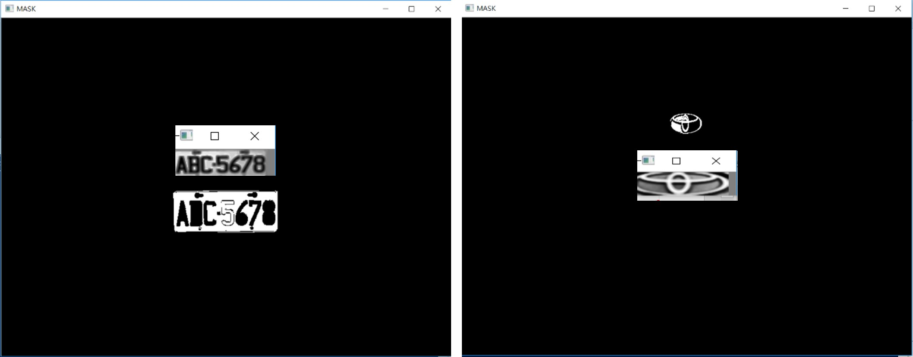

9-1-1車牌切割
程式說明:
此車牌辨識的專案是參考底下網址matering opencv第五章，並且沿用其中的一些資料庫， 目前這邊是將其客製化成台灣的車牌，並且為了一一說明程式，將其拆成5個小專說明。 參考網址: https://github.com/MasteringOpenCV
運行結果:
這邊我們先對圖像做邊緣偵測，並且將其二值化，二值化完後用closing來連結圖塊，
利用Contour找出物體輪廓，並判斷pixel數目不足於多少時或高於多少時剃除，保留下來的為mask，
以此mask再將rgb的圖用洪水法將其圖塊塗滿，並裁剪下來，以便下專案可以做文字切割。

範例程式:
#include <iostream>
#include <opencv2/opencv.hpp>
#include <opencv2/highgui/highgui.hpp>
#include <vector>
#include <algorithm>
bool verifyCarPlateSizes(cv::RotatedRect mAr)
{
float error = 0.4; //車牌面積比例的誤差
//一般台灣車牌的比例，初估為2.6
float aspect = 2.6;
//多大的面積pxiel忽略不偵測
int min = 15 * aspect * 15;
int max = 125 * aspect * 125;
float rmin = aspect - aspect*error;
float rmax = aspect + aspect*error;
int area = mAr.size.height * mAr.size.width; //計算面積
float r = (float)mAr.size.width / (float)mAr.size.height;
if (r<1)
r = (float)mAr.size.height / (float)mAr.size.width;
if ((area < min || area > max) || (r < rmin || r > rmax))
{
return false;
}
else
{
return true;
}
}
cv::Mat histeq(cv::Mat in)
{
cv::Mat out(in.size(), in.type());
if (in.channels() == 3){
cv::Mat hsv;
std::vector
cv::cvtColor(in, hsv, CV_BGR2HSV);
cv::split(hsv, hsvSplit);
cv::equalizeHist(hsvSplit[2], hsvSplit[2]);
cv::merge(hsvSplit, hsv);
cv::cvtColor(hsv, out, CV_HSV2BGR);
}
else if (in.channels() == 1)
{
cv::equalizeHist(in, out);
}
return out;
}
void carPlateSegment(cv::Mat& carImg, cv::Mat& carImgColor, int& num)
{
//先除雜訊
cv::blur(carImg, carImg, cv::Size(5, 5));
//先做sobel找出邊緣
cv::Mat sobleImg;
cv::Sobel(carImg, sobleImg, CV_8U, 1, 0, 3, 1, 0, cv::BORDER_DEFAULT);
//將偵測出邊緣的圖片二值化
cv::Mat binartEdgeImg;
cv::threshold(sobleImg, binartEdgeImg, 0, 255, CV_THRESH_OTSU + CV_THRESH_BINARY);
//利用closing結合邊緣試著將多邊緣區域結合成一圖塊(blob)
cv::Mat element = cv::getStructuringElement(cv::MORPH_RECT, cv::Size(17, 3));
cv::morphologyEx(binartEdgeImg, binartEdgeImg, CV_MOP_CLOSE, element);
//找連結的圖塊的輪廓
std::vector< std::vector< cv::Point> > contours;
findContours(binartEdgeImg, contours, CV_RETR_EXTERNAL, CV_CHAIN_APPROX_NONE);
//開始處理偵測到的輪廓
std::vector
std::vector
//Remove patch that are no inside limits of aspect ratio and area.
while (itc != contours.end())
{
//Create bounding rect of object
cv::RotatedRect mAr = cv::minAreaRect(cv::Mat(*itc));
if (!verifyCarPlateSizes(mAr))
{
itc = contours.erase(itc);
}
else
{
++itc;
rects.push_back(mAr);
}
}
cv::Mat result;
carImgColor.copyTo(result);
cv::drawContours(result, contours,
-1, // draw all contours
cv::Scalar(255, 0, 0), // in blue
1); // with a thickness of 1
for (int i = 0; i< rects.size(); i++)
{
//為了找到更適合的車牌區間，利用洪水法的方法來填充相似的色塊，以及配合contour找出的圖塊邊緣來判斷
cv::circle(result, rects[i].center, 3, cv::Scalar(0, 255, 0), -1);
//get the min size between width and height
float minSize = (rects[i].size.width < rects[i].size.height) ? rects[i].size.width : rects[i].size.height;
minSize = minSize - minSize*0.5;
cv::Mat mask;
mask.create(carImgColor.rows + 2, carImgColor.cols + 2, CV_8UC1);
mask = cv::Scalar::all(0);
int loDiff = 30;
int upDiff = 30;
int connectivity = 4;
int newMaskVal = 255;
int NumSeeds = 10;
cv::Rect ccomp;
int flags = connectivity + (newMaskVal << 8) + CV_FLOODFILL_FIXED_RANGE + CV_FLOODFILL_MASK_ONLY;
for (int j = 0; j
cv::Point seed;
seed.x = rects[i].center.x + rand() % (int)minSize - (minSize / 2);
seed.y = rects[i].center.y + rand() % (int)minSize - (minSize / 2);
cv::circle(result, seed, 1, cv::Scalar(0, 255, 255), -1);
int area = floodFill(carImgColor, mask, seed, cv::Scalar(255, 0, 0), &ccomp, cv::Scalar(loDiff, loDiff, loDiff), cv::Scalar(upDiff, upDiff, upDiff), connectivity | (newMaskVal << 8) | CV_FLOODFILL_FIXED_RANGE | CV_FLOODFILL_MASK_ONLY);
}
cv::imshow("MASK", mask);
cv::waitKey(0);
//Check new floodfill mask match for a correct patch.
//Get all points detected for get Minimal rotated Rect
std::vector
cv::Mat_
cv::Mat_
for (; itMask != end; ++itMask)
if (*itMask == 255)
pointsInterest.push_back(itMask.pos());
cv::RotatedRect minRect = minAreaRect(pointsInterest);
if (verifyCarPlateSizes(minRect))
{
// rotated rectangle drawing
cv::Point2f rect_points[4]; minRect.points(rect_points);
for (int j = 0; j < 4; j++)
line(result, rect_points[j], rect_points[(j + 1) % 4], cv::Scalar(0, 0, 255), 1, 8);
//Get rotation matrix
float r = (float)minRect.size.width / (float)minRect.size.height;
float angle = minRect.angle;
if (r<1)
angle = 90 + angle;
cv::Mat rotmat = getRotationMatrix2D(minRect.center, angle, 1);
//Create and rotate image
cv::Mat img_rotated;
cv::warpAffine(carImgColor, img_rotated, rotmat, carImgColor.size(), CV_INTER_CUBIC);
//Crop image
cv::Size rect_size = minRect.size;
if (r < 1)
std::swap(rect_size.width, rect_size.height);
cv::Mat img_crop;
getRectSubPix(img_rotated, rect_size, minRect.center, img_crop);
cv::Mat resultResized;
resultResized.create(33, 110, CV_8UC3);
resize(img_crop, resultResized, resultResized.size(), 0, 0, cv::INTER_CUBIC);
//Equalize croped image
cv::Mat grayResult;
cv::cvtColor(resultResized, grayResult, CV_BGR2GRAY);
cv::blur(grayResult, grayResult, cv::Size(3, 3));
grayResult = histeq(grayResult);
std::string filename = "file";
std::stringstream numS;
numS << i;
filename = filename + numS.str() + ".bmp";
cv::imshow("carPlate", grayResult);
cv::waitKey(0);
cv::imwrite(filename, grayResult);
num++;
}
}
}
int main(int argc, char** argv)
{
cv::Mat carImgInColor = cv::imread("car01.jpg", 1);
cv::Mat carImgIn = cv::imread("car01.jpg", 0);
cv::Mat carImg, carImgColor;
cv::resize(carImgIn, carImg, cv::Size(800,600));
cv::resize(carImgInColor, carImgColor, cv::Size(800, 600));
int num = 0;
carPlateSegment(carImg, carImgColor, num);
return 0;
}